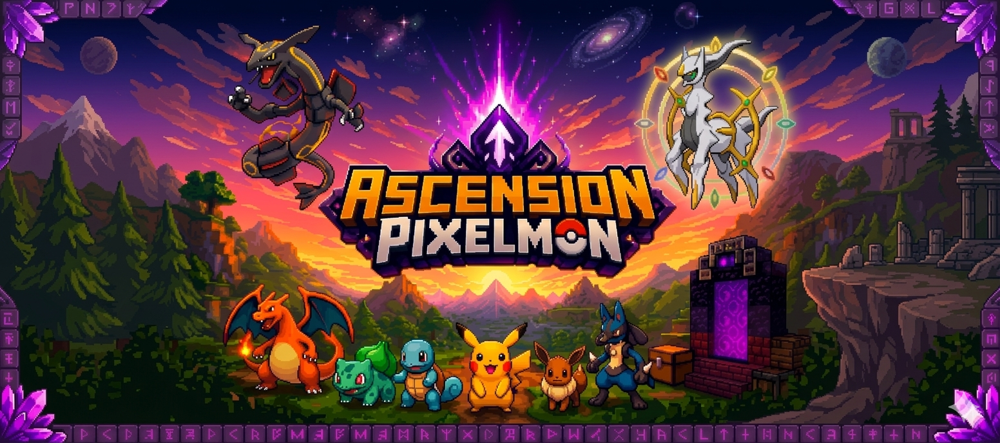
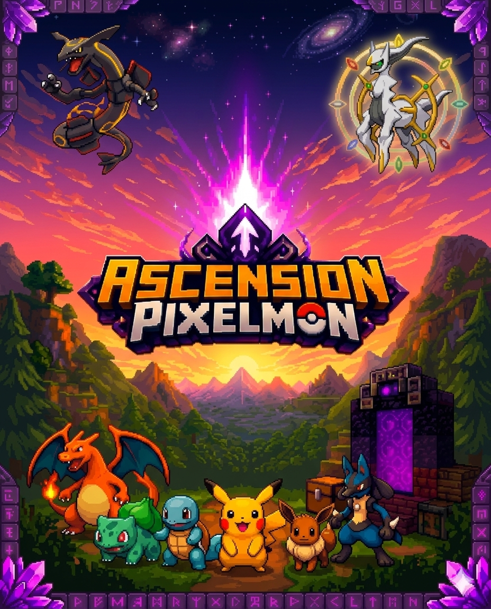

ANDROID • JAVA EDITION
Ascension
Ascension
Pixelmon
Minecraft 1.21.1 • NeoForge 21.1.200 • Pixelmon

Minecraft 1.21.1 • NeoForge 21.1.200 • Pixelmon
Use sempre o mesmo Nick para manter Pokémon, itens e progresso.
O launcher valida o SHA-256 e só troca a pasta após um download válido.
O próprio launcher instala Minecraft 1.21.1, Java 21 e NeoForge 21.1.200 quando necessário.
Minecraft Java, Java 21, NeoForge e o modpack são preparados pelo próprio Ascension Launcher.
Minecraft 1.21.1 · NeoForge 21.1.200
Compara o digest do GitHub. Se houver atualização, baixa em pasta temporária, valida e só depois substitui os mods.
config.zip e options.txt são instalados apenas na primeira preparação e depois preservados.
O motor Minecraft Java faz parte do próprio Ascension Launcher. Não é necessário instalar outro launcher.
Ferramentas de reparo sem apagar seu perfil.
Na próxima preparação, o launcher ignora o hash salvo e baixa mods.zip novamente. A pasta atual só é removida depois que a nova passar na validação.
Esses arquivos não são reinstalados a cada toque em Jogar, evitando sobrescrever suas preferências.
O servidor é incluído no pacote mobile gerado pelo launcher.
